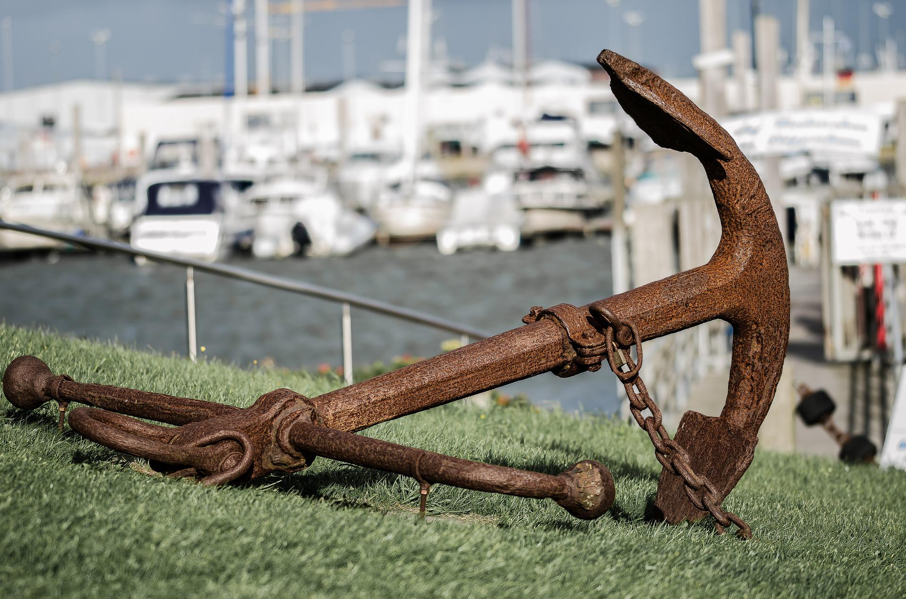

Llegas con 2 minutos de ventaja al puerto militar y te sientas en la sala de espera para los barcos. ¡Tu sueño se esta cumpliendo! Después de 2 semanas de preparación llega el día para subirte a una embarcación e irte a la base de las Islas Malvinas. Tu buque es el último en zarpar y sale a las 06:00AM y son las 05:50AM.
Decides descansar en la sala de espera. ¡Otra vez te has quedado dormido! Te despiertas a las 06:02Am, ves hacia el puerto y tu navío ya ha zarpado ¡Oh no...!. Te ha visto un señor en el puerto, tiene una lancha y se ha ofrecido a llevarte.
Ir en la lancha O Esperar a que salga otro barco del ejército